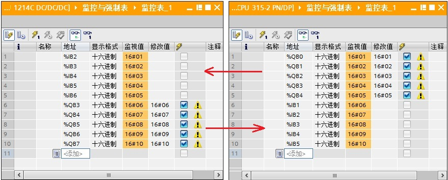

使用 S7-1200 与 S7-300 的集成 DP 接口进行主从通信，这里是将 S7-1200 做为主站，将 S7-300 做为从站，即：S7-1200 通过 CM1243-5 做主站，S7-300 集成的 DP 接口做从站。下面详细介绍使用方法。
硬件：
软件：
S7-1200 通过 CM1243-5 做主站，S7-300 集成的 DP 接口做从站，这种方式可以分2种情况来操作，具体如下：
CM1243-5 做 DP 主站，S7-300 CPU 的集成 DP 接口做 DP 从站，使用 Step7 V12 在一个项目中操作，详细步骤如下。
使用 STEP7 V12 创建一个新项目，并通过“添加新设备”组态 S7-1200 站 PLC_1，选择 CPU1214C DC/DC/DC V2.2；接着组态 S7-300 站 PLC_2，如图 1 所示。
图 1 在新项目中插入 S7-1200 站和 S7-300 站
组态 CM1243-5 的 DP 接口，进入 CM1243-5 的属性框，添加子网“PROFIBUS_1”,站址选择 2，如图 2 所示。
图 2 组态 CM1243-5
组态 S7-300 CPU 的集成 DP 接口，进入 DP 接口的属性框，在“PROFIBUS 地址”界面，子网选择“PROFIBUS_1”,地址选择 3；在“操作模式”界面，操作模式选择“DP 从站”，分配的 DP 主站选择“PLC_1.CM1243-5.DP 接口”，在“传输区域”创建 2 个区域，输入输出各 16 个字；可以点击“智能从站通信”中的“传输区_1”和“传输区_2”，查看或修改传输区的详细信息。如图 3 所示。
图 3 组态 S7-300 CPU 的集成 DP 接口
在同一项目中，分别为 CPU1214C 和 S7-300 CPU 创建监控表，进行通讯测试，如图 4 所示。

图 4 同一项目通信测试
CM1243-5 做 DP 主站，S7-300 CPU 的集成 DP 接口做 DP 从站，不在一个项目中的操作，即：CPU 1214C 使用 Step7 V12，而 S7-300 CPU 分别使用 Step7 V12 和 Step7 V5.5，详细步骤如下。
使用 STEP7 V12 创建一个新项目，并通过“添加新设备”组态 S7-1200 站 PLC_1，组态 CM1243-5 的 DP 接口，进入 CM1243-5 的属性框，添加子网“PROFIBUS_1”,站址选择 2，如图 5 所示。
图 5 插入 S7-1200 站并组态 CM1243-5
打开软件 Step7 V12，通过“选项”进入“安装设备描述文件”界面， 在“源路径”选择 S7-300 CPU 的 GSD 文件存放路径。注意：源路径中不能有中文字符。
S7-300 CPU 的 GSD 文件下载链接：http://support.automation.siemens.com/cn/view/zh/113652。
图 6 安装 S7-300 CPU 的 GSD 文件
安装好从站 S7-300 CPU 的 GSD 文件，在主站项目中的网络视图中，将它从选件的目录中拖拽至视图界面中，如图 7 所示。
图 7 插入从站 S7-300 CPU
点击图 7 中的蓝色字“未分配”，出现“选择主站：PLC_1.CM 1243-5.DP 接口”选项，点击“PLC_1.CM 1243-5.DP 接口”，主站选择成 CM 1243-5（见蓝色字），同时 S7-300 CPU 的集成 DP 接口连接到了“主站系统：PLC_1.DP-Mastersystem(1)”。如图 8 所示。
图 8 主站项目中配置从站 S7-300 CPU
双击图 7 中的“Slave_1”,进入从站的设备视图， 将“Master_I Slave_Q 16 Wo unit”和“Master_Q Slave_I 16 Wo unit”分别插入到设备概览的 4 槽和 5 槽。注意：4 槽表示主站组态输入 16 个字，5 槽表示主站组态输出 16 个字， 这与后面组态从站的输入输出需要一一对应。如图 9 所示。
图 9 主站项目中组态从站 S7-300 CPU
如果使用软件 Step7 V5.5 创建 S7-300 这个DP从站，请直接跳到步骤 2-5。
在这使用 Step7 V12 创建一个新项目（DP从站：S7-300），并通过“添加新设备”组态 S7-300 站PLC_1，进入 S7-300 CPU 集成的 DP 接口的属性框，在“PROFIBUS 地址”界面中，接口类型选择“PROFIBUS”，添加子网“PROFIBUS_1”,站址选择 3，如图 10 所示。
图 10 Step7 V12 中创建 300
接着在“操作模式”界面中，选择“DP 从站”，在智能从站通信的传输区域添加 2 个传输区（“传输区_1”、“传输区_2”），数据长度都是 16 个字。注意：要与主站的输入输出对应，即：“传输区_1”为 16 个字的输出，“传输区_2”为 16 个字的输入。如图 11 所示。
图 11 Step7 V12 创建 S7-300 CPU 站的 DP 组态
Step7 V12 创建的 CM1243-5 做 DP 主站的项目， Step7 V12 创建的 S7-300 CPU 做 DP 从站的项目，两个项目分别新建监控表，进入通信监控，如图 12 所示。
图 12 不同项目通信测试(V12 与 V12，第二种情况)
如果使用软件 Step7 V12 创建 S7-300 这个DP从站，请直接跳到步骤 2-3。
在这使用 Step7 V5.5 创建一个新项目（DP从站：S7-300）。在 MPI/DP 接口的属性框中，“常规”属性页中选择“PROFIBUS”接口类型，站址选择 3；“工作模式”属性页中选择“DP 从站”；“组态”属性页中组态输入输出，数据长度 16 个字，注意：要与主站的输入输出对应，即：第 1 行组态为 16 个字的输出，第 2 行组态为 16 个字的输入。。如图 13 所示。
图 13 Step7 V5.5 创建 S7-300 CPU 并组态 DP 接口
Step7 V12 创建的 CM1243-5 做 DP 主站的项目， Step7 V5.5 创建的 S7-300 CPU 做 DP 从站的项目，两个项目分别新建监控表，进入通信监控，如图 14 所示。
图 14 不同项目通信测试(V12 与 V5.5，第二种情况)